CSC201 - Computer Organization
Combinational Building Blocks
Multiplexer (Mux)
Selects between one of N inputs to connect to output log2N-bit select input – control input
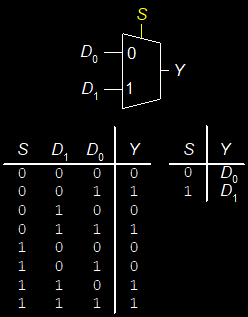
Multiplexer Implementations
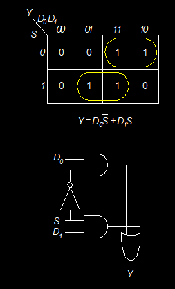
Logic using Multiplexers
Using a Mux as a lookup table
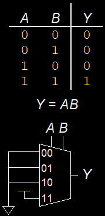
Reducing the size of the mux
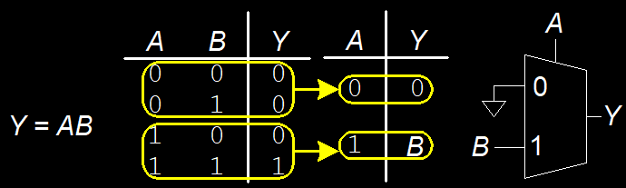
Decoders
N inputs, 2N outputs One-hot outputs: only one output HIGH at once
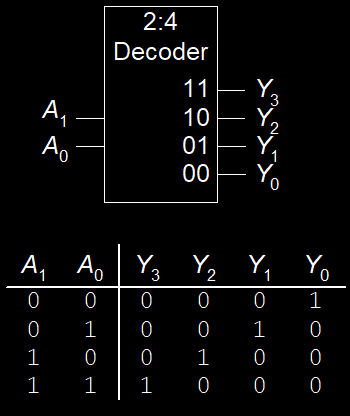
Decoder implementation
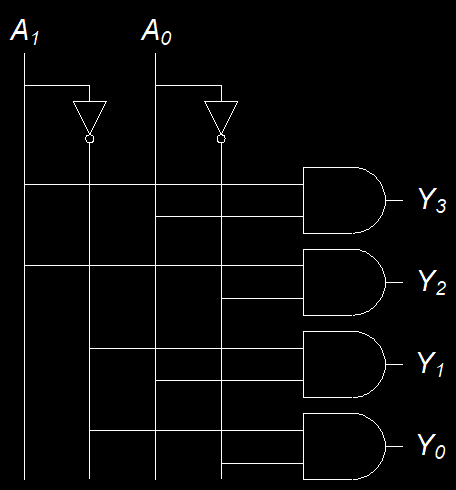
Logic with decoders
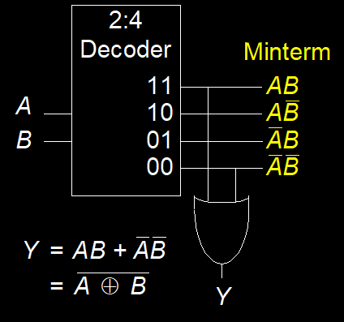
Critical paths
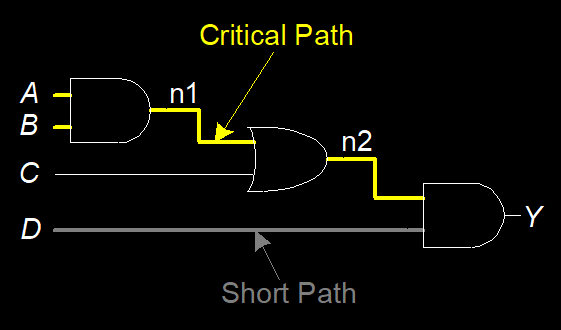
Adders
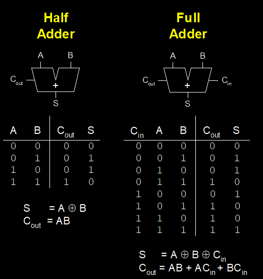
Ripple-Carry Adder
Chain 1-bit adders together Carry ripples through entire chain Disadvantage: slow
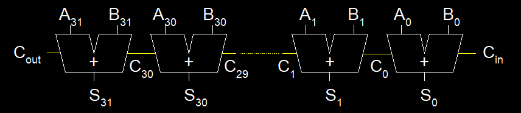
Subtracter
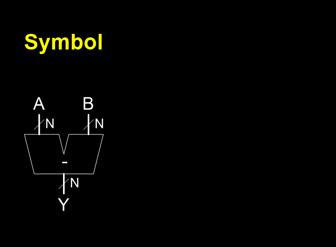 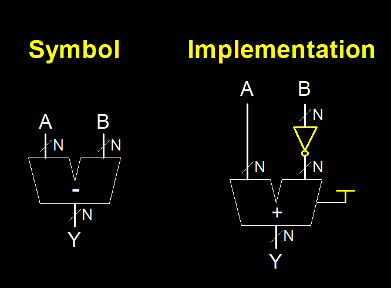
Multipliers
Partial products formed by multiplying a single digit of the multiplier with multiplicand Shifted partial products summed to form result

4 x 4 Multiplier

Dividers
A/B = Q + R/B
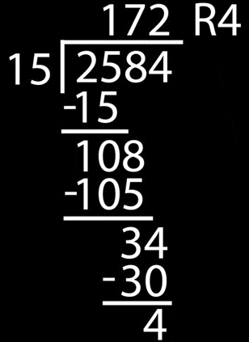
Decimal Example: 2584/15 = 172 R4

Dividers
A/B = Q + R/B
Decimal: 2584/15 = 172 R4
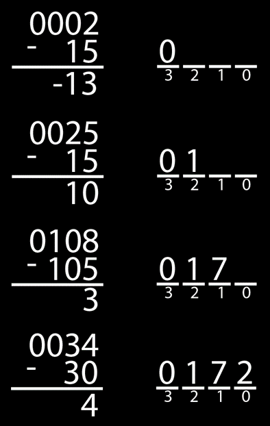
Binary: 1101/0010 = 0110 R1
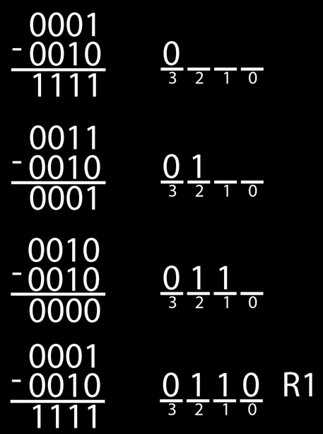
Dividers
A/B = Q + R/B
R’ = 0
for i = N-1 to 0
R = {R’ << 1, Ai}
D = R - B
if D < 0, Qi= 0; R’= R
else Qi= 1; R’= D
R=R’
4 x 4 Divider
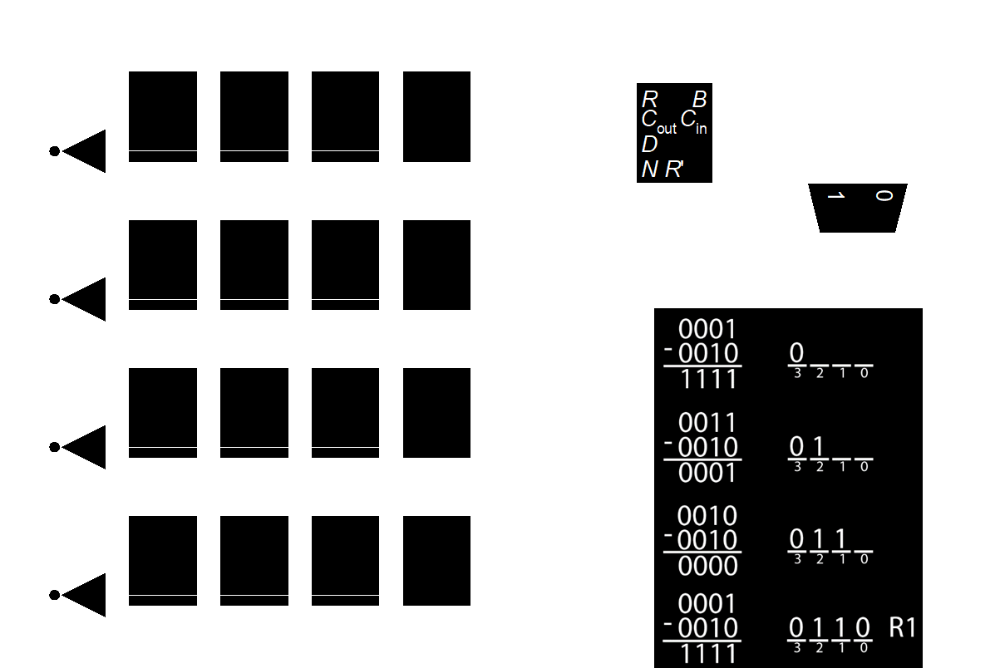
Each row computes one iteration of the division algorithm.
Comparator: Equality
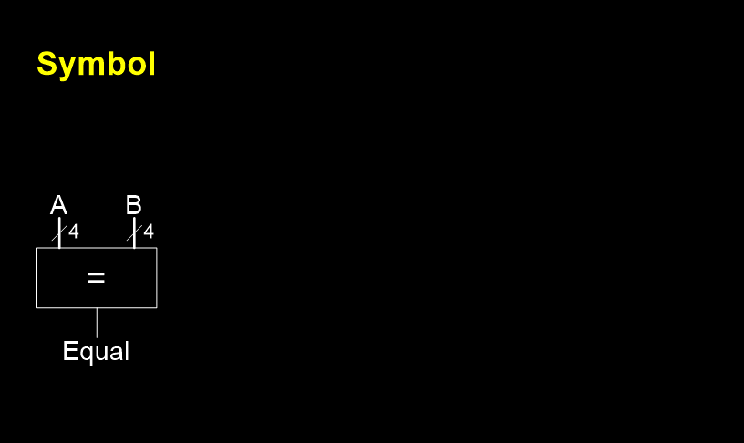
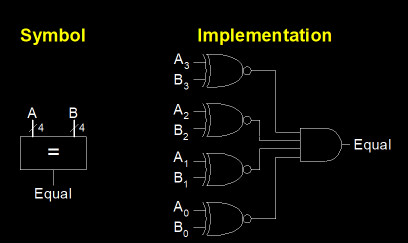
Comparator: Less Than
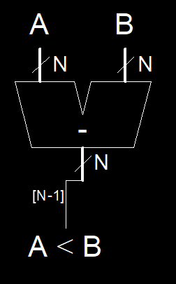
Shifters
-
Logical shifter: shifts value to left or right and fills empty spaces with 0’s
- Ex: 11001 >> 2 =
- Ex: 11001 << 2 =
-
Arithmetic shifter: same as logical shifter, but on right shift, fills empty spaces with the old most significant bit (msb).
- Ex: 11001 >>> 2 =
- Ex: 11001 <<< 2 =
-
Rotator: rotates bits in a circle, such that bits shifted off one end are shifted into the other end
- Ex: 11001 ROR 2 =
- Ex: 11001 ROL 2 =
Shifters
-
Logical shifter:
- Ex: 11001 >> 2 = 00110
- Ex: 11001 << 2 = 00100
-
Arithmetic shifter:
- Ex: 11001 >>> 2 = 11110
- Ex: 11001 <<< 2 = 00100
-
Rotator:
- Ex: 11001 ROR 2 = 01110
- Ex: 11001 ROL 2 = 00111
Shifter Design
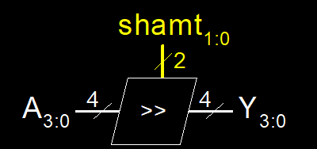 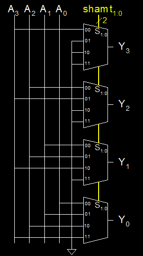
Shifters as Multipliers, Dividers
A << N = A × 2N
- Example: 00001 << 2 = 00100 (1 × 22 = 4)
- Example: 11101 << 2 = 10100 (-3 × 22 = -12)
A >>> N = A ÷ 2N
- Example: 01000 >>> 2 = 00010 (8 ÷ 22 = 2)
- Example: 10000 >>> 2 = 11100 (-16 ÷ 22 = -4)